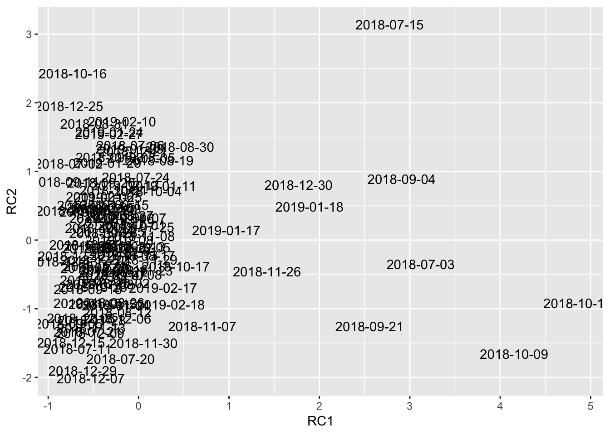

Chapter 5 Cluster Analysis
#Weather data - July 2018 to February 2019 (daily summaries)
changi_daily_weather <- read_excel(here::here("Data/daily_weather_changi.xlsx")) %>%
mutate(date=date(date))
# Changi traffic data - July 2018 to February 2019 (hourly data)
changi_stats <- read_excel(here::here("Data/changi_stats.xlsx"))
#Changi Weather and Traffic data - July 2018 to February 2019 (hourly data)
changi_hourly_weather<-read_excel(here::here("Data/weather_june18_feb19.xlsx"))
changi_hourly_weather <-changi_hourly_weather %>%
mutate(total_tfc = departure_tfc+arrival_tfc)hourly_stats_weather <-changi_hourly_weather %>%
mutate(hour = hour(local_time)) %>%
mutate(date = date(local_time))changi_stats <- read_excel(here::here("Data/changi_stats.xlsx")) %>%
mutate(daily_tfc = departure_tfc+arrival_tfc) %>%
mutate(date = date(local_time))
daily_tfc_flow<-changi_stats %>%
group_by(date) %>%
summarise(daily_tfc = sum(daily_tfc))
daily_stats_weather <- left_join(changi_daily_weather, daily_tfc_flow)## Joining, by = "date"data<- left_join(hourly_stats_weather, daily_stats_weather, by = "date")hourly_cluster_data<-hourly_stats_weather %>%
select(-date, -hour, -weather_id, -weather_description, -weather_main) %>%
sample_n(100)
hourly_cluster_data<-hourly_cluster_data %>%
column_to_rownames(var = "local_time")fa_daily_stats <- daily_stats_weather %>%
sample_n(100) %>%
column_to_rownames(var = "date") %>%
select(daily_rainfall_mm, daily_tfc, daily_wind_speed, `30min_rainfall_mm`, `60min_rainfall_mm`, temp_mean_daily, daily_max_wind_speed) %>%
principal(nfactors = 4, rotate = "varimax")
fa_daily_stats## Principal Components Analysis
## Call: principal(r = ., nfactors = 4, rotate = "varimax")
## Standardized loadings (pattern matrix) based upon correlation matrix
## RC1 RC4 RC2 RC3 h2 u2 com
## daily_rainfall_mm 0.95 -0.21 -0.08 -0.02 0.96 0.0443 1.1
## daily_tfc -0.07 0.05 0.00 1.00 1.00 0.0016 1.0
## daily_wind_speed -0.18 0.80 0.42 0.09 0.86 0.1415 1.7
## 30min_rainfall_mm 0.96 -0.23 -0.04 -0.06 0.97 0.0304 1.1
## 60min_rainfall_mm 0.97 -0.19 -0.06 -0.07 0.99 0.0124 1.1
## temp_mean_daily -0.33 0.89 0.03 0.00 0.90 0.0986 1.3
## daily_max_wind_speed -0.06 0.20 0.97 0.00 0.98 0.0246 1.1
##
## RC1 RC4 RC2 RC3
## SS loadings 2.91 1.60 1.12 1.01
## Proportion Var 0.42 0.23 0.16 0.14
## Cumulative Var 0.42 0.64 0.81 0.95
## Proportion Explained 0.44 0.24 0.17 0.15
## Cumulative Proportion 0.44 0.68 0.85 1.00
##
## Mean item complexity = 1.2
## Test of the hypothesis that 4 components are sufficient.
##
## The root mean square of the residuals (RMSR) is 0.03
## with the empirical chi square 4.62 with prob < NA
##
## Fit based upon off diagonal values = 1fa_daily_stats[['scores']] %>%
unclass() %>%
as_tibble(rownames = "date") %>%
ggplot(aes(x = RC1, y = RC2)) + geom_text(aes(label = date))
fviz_nbclust(fa_hourly_cluster, kmeans, method = "wss")
hourly_kmeans_clusters <- kmeans(fa_hourly_cluster, centers = 7, nstart = 50)
fviz_cluster(hourly_kmeans_clusters, data = fa_hourly_cluster)
fa_daily_cluster<-fa_daily_stats[['scores']] %>%
unclass() %>%
as_tibble(rownames = "date")
fa_daily_cluster<-fa_daily_cluster %>%
column_to_rownames(var = "date")fviz_nbclust(fa_daily_cluster, kmeans, method = "wss")daily_kmeans_clusters <- kmeans(fa_daily_cluster, centers = 5, nstart = 50)
fviz_cluster(daily_kmeans_clusters, data = fa_daily_cluster)